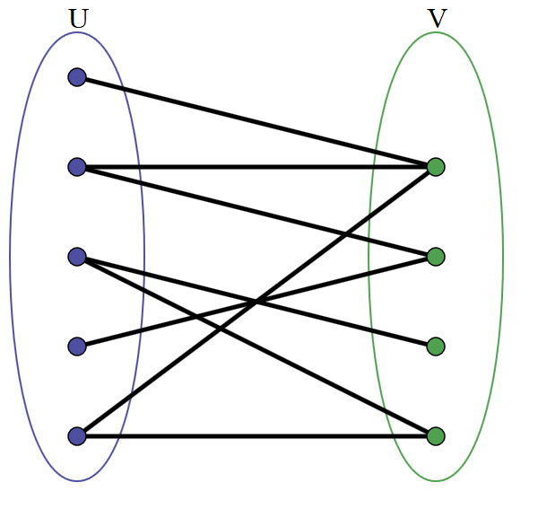

Um grafo é bipartido se pode ser dividido em dois conjuntos de nós, nos quais cada nó de um conjunto apenas tem ligações a nós do outro conjunto.
Por exemplo, o seguinte grafo é bipartido:

Diz-se também que um grafo bipartido pode ser colorido apenas com duas cores (na colocação de grafos é proíbido ter dois nós conectados entre si com a mesma cor). É esta interpretação que a solução seguinte utiliza.
O algoritmo começa por colorir o primeiro nó do grafo com a cor 1 (por exemplo). Depois colora os seus sucessores com a cor 2 e coloca-os numa fila para fazer o mesmo aos seus vários sucessores (ou seja, estamos a usar uma pesquisa em largura). Se porventura aparecer um caso que não se pode resolver (dois vizinhos que teriam de ter a mesma cor) terminamos em insucesso.
/**
* Checks if a graph is bipartide, ie, it's 2-colorable
* @requires a connected undirected graph (including node 0)
* @complexity O(V + E)
* @return true iff is bipartide
*/
public boolean isBipartide() {
int[] colors = new int[size]; // we use colors 1 and 2
Queue<Integer> queue = new LinkedList<Integer>();
queue.add(0); // add a graph's node
colors[0] = 1; // ...and 'paint' it with color 1
boolean isBipartide = true;
while(!queue.isEmpty() && isBipartide) {
int current = queue.poll();
for(int node : sucessors(current))
if (colors[node] == 0) { // the color isn't yet assigned
colors[node] = 3-colors[current]; // 1 --> 2, 2 --> 1
queue.add(node);
} else
isBipartide = colors[current] != colors[node]; // must have diff colors
}
return isBipartide;
}
Problemas relacionados: